Congratulations on Level 60!
You have reached endgame!
This guide will walk you through the PvE gearing path from your first set of gear to the hardest dungeons in Old School TERA.
Contents
Roadmap & Progression
Dungeon Progression
-
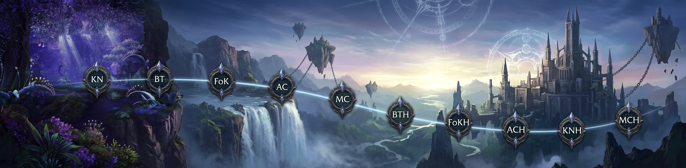
Gear Progression
-
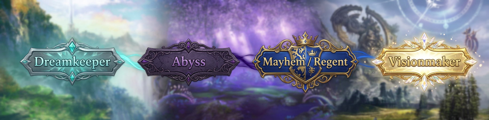
Dungeon & Loot Summary
| Dungeon | Gear Drops | Tokens | Jewelry | Items |
|---|---|---|---|---|
| KN |
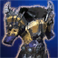 Dreamkeeper Chest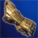 Dreamkeeper Gloves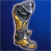 Dreamkeeper Boots |
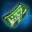 Glyph Token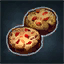 Supply Token |
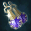 Entry-level Earring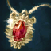 Entry-level Necklace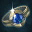 Entry-level Ring |
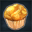 Marvelous Feedstock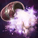 Marvelous Alkahest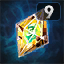 Tier 9 Feedstock |
| BT | - | 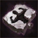 Lesser Abyssal Mark |
- |
Marvelous Feedstock Tier 9 Feedstock |
| FoK | - | Lesser Abyssal Mark | - |
Marvelous Feedstock Tier 9 Feedstock |
| AC | - | Greater Abyssal Mark | - |
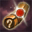 Master Enigmatic ScrollTier 9 Feedstock Marvelous Feedstock |
| MC | - | - | - |
Master Enigmatic Scroll Marvelous Feedstock Tier 9 Feedstock |
| BTH |
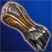 Abyss Gloves |
Lesser Abyssal Mark (x2) |
Mid-level Necklace Mid-level Ring |
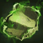 Dream Bindings*Marvelous Alkahest |
| FoKH |
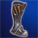 Abyss Boots |
Lesser Abyssal Mark (x2) |
Mid-level Necklace Mid-level Earring |
Marvelous Alkahest |
| ACH |
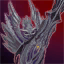 Abyss Weapon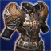 Abyss Chest |
Greater Abyssal Mark (x2) | - |
Master Enigmatic Scroll Marvelous Alkahest |
| KNH |
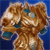 Mayhem Chest |
Mark of the Phoenix | - |
Master Enigmatic Scroll Marvelous Feedstock Marvelous Alkahest |
| MCH |
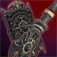 Regent Weapon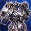 Regent Chest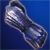 Regent Gloves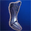 Regent Boots |
- |
BiS Necklace 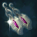 BiS Earring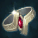 BiS Ring |
|
*Needed for crafting Visionmaker Gear
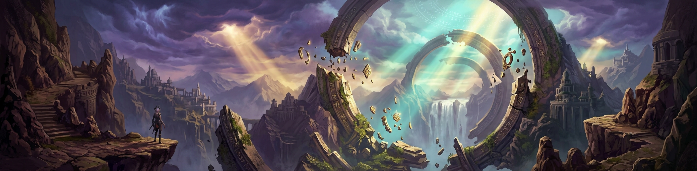
Part 1 — Starter Gear (Dreamkeeper)
Inception Tokens
After reaching level 60 you will receive a Parcel Post containing materials used for early endgame progression.
Your endgame PvE journey begins with  Inception Tokens. These allow you to purchase your first PvE gear and other essential progression items from the Inception Shop.
Inception Tokens. These allow you to purchase your first PvE gear and other essential progression items from the Inception Shop.
What to Buy First
-
 Dreamkeeper Set – Your first PvE gear set. Buy this first.
Dreamkeeper Set – Your first PvE gear set. Buy this first.
- Glyph Tokens – Used to unlock glyphs that enhance your class abilities.
Farming Inception Tokens
Once you purchase your first Dreamkeeper piece, you will need more  Inception Tokens (or gear drops) to complete the full set. Both can be acquired from Kelsaik's Nest (Normal).
Inception Tokens (or gear drops) to complete the full set. Both can be acquired from Kelsaik's Nest (Normal).
Part 2 — Beginner Dungeons
Kelsaik's Nest (Normal) [KN]
Queue for this dungeon using the
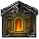
Instance Matching system, recruit others via LFG (Default="Y" Key), and/or request help from other players via Global Chat (/c).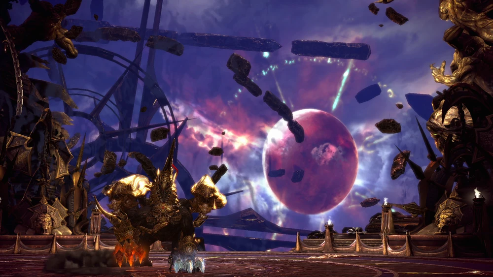
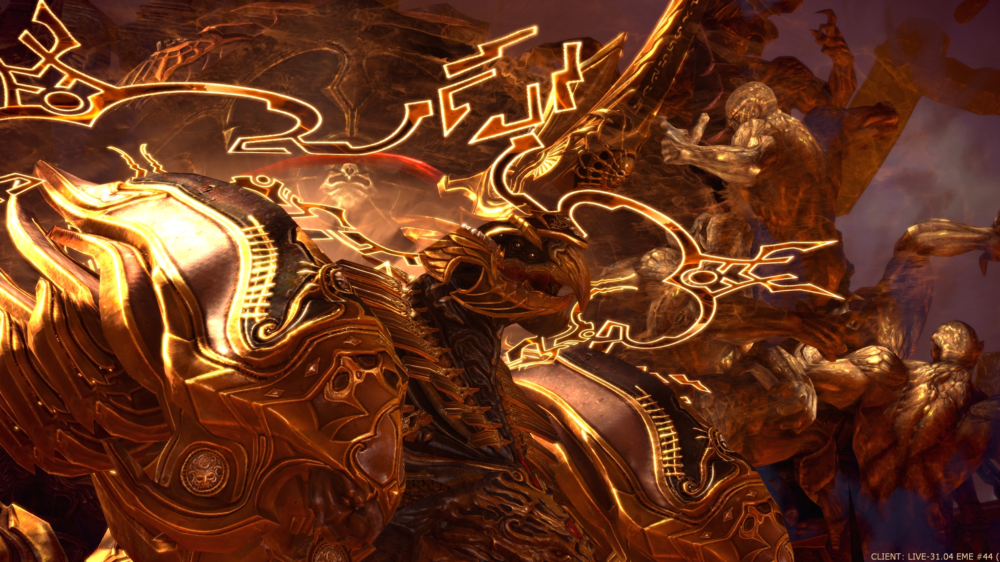
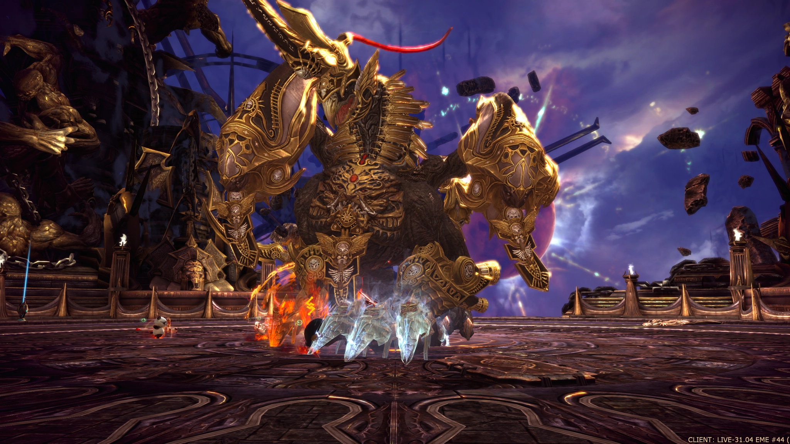
- Enemy: Kelsaik
- Rewards:
- +6 Dreamkeeper Weapon
- +6 Dreamkeeper Chest
- +6 Dreamkeeper Gloves
- +6 Dreamkeeper Boots
- Caged Raindrop
- Thulsan Curio
- Sunder Ring
 Inception Token
Inception Token- Marvelous Feedstock
- Marvelous Alkahest
- Tier 9 Feedstock
- Supply Token
Part 3 — Normal Mode Dungeons
With your Dreamkeeper set complete, begin farming Normal Mode dungeons for enchanting materials.
Balder's Temple (Normal) [BT]
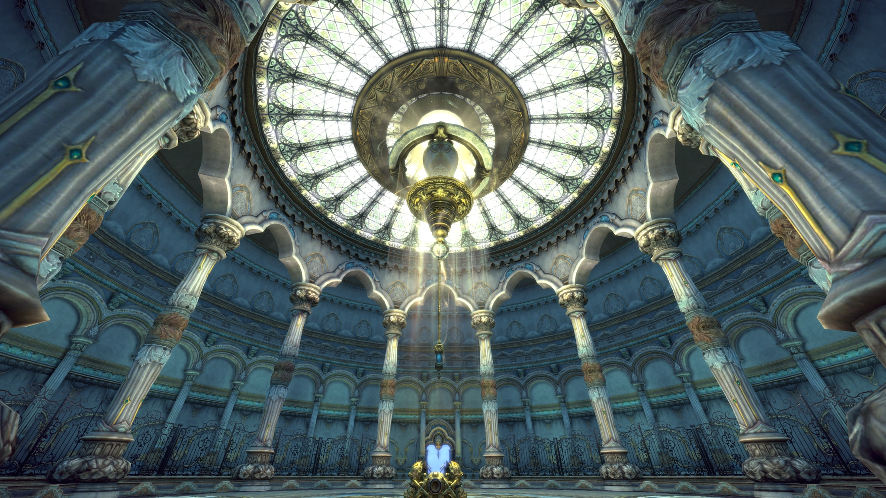
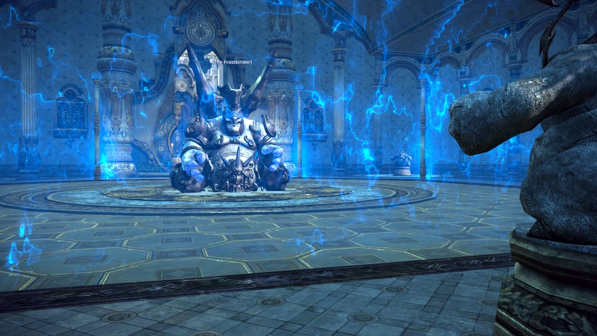
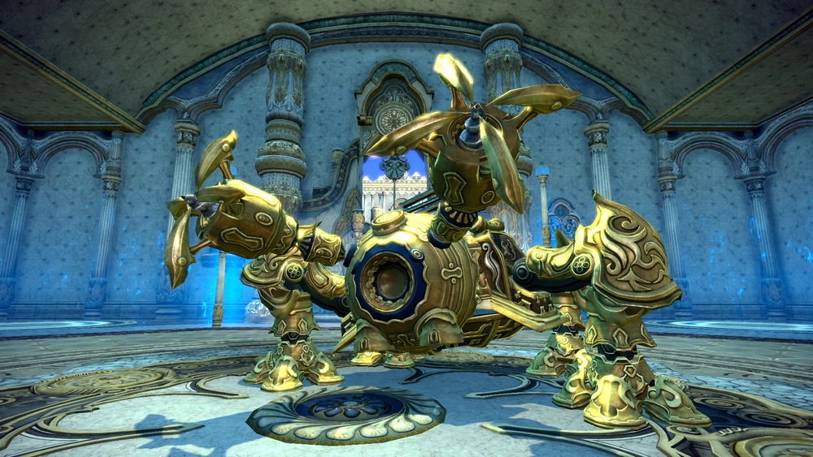
- Enemies:
- Kakun, Watcher of the Garden
- Lagreah, Protector of the Garden and/or Grig, Keeper of Flame
- Glaciernus, the Frostbinder
- Auricadis, Guardian of the Relic
- Rewards:
- Lesser Abyssal Mark (for Abyss Gloves and Boots)
- Tier 9 Feedstock
- Marvelous Feedstock
Fane of Kaprima (Normal) [FoK]
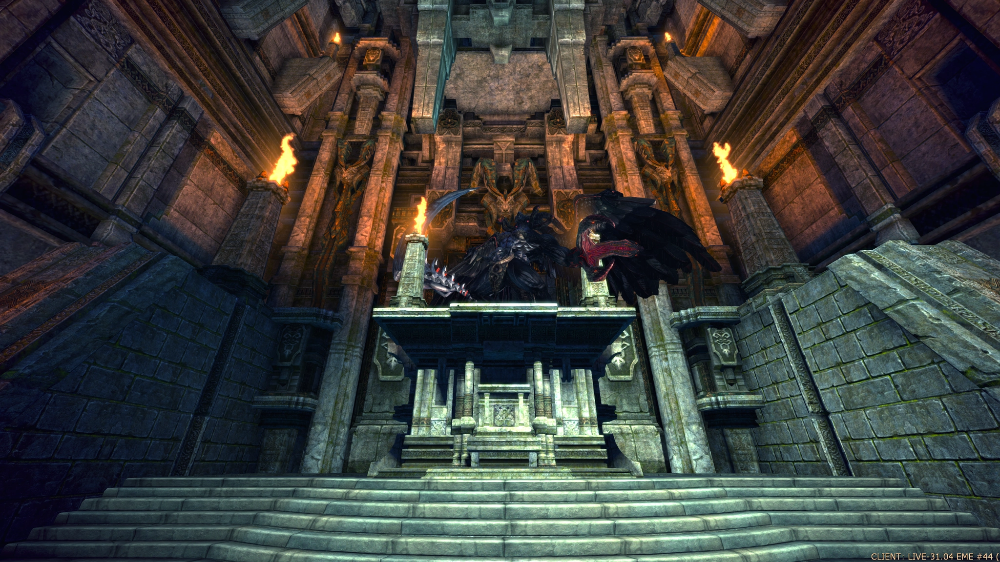
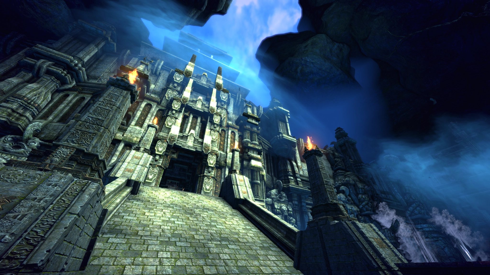
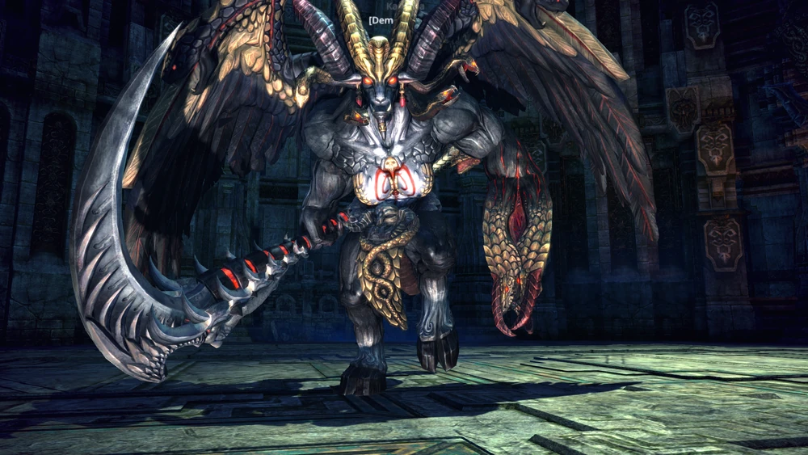
- Enemies:
- Pyrvathas, Infernal Gatekeeper
- Agarta, Syndicate Battlemaster
- Kornus, Champion of Kaprima
- Kaprima, Demon Reaver
- Rewards:
- Lesser Abyssal Mark (for Abyss Gloves and Boots)
- Tier 9 Feedstock
- Marvelous Feedstock
Argon Corpus (Normal) [AC]
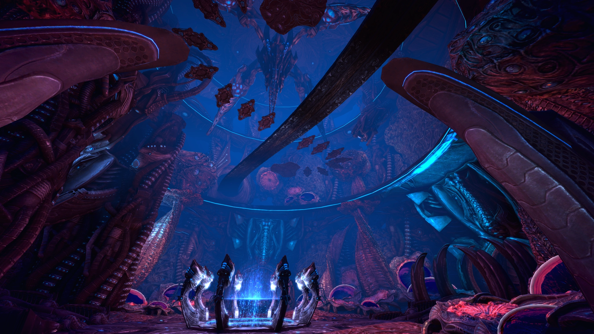
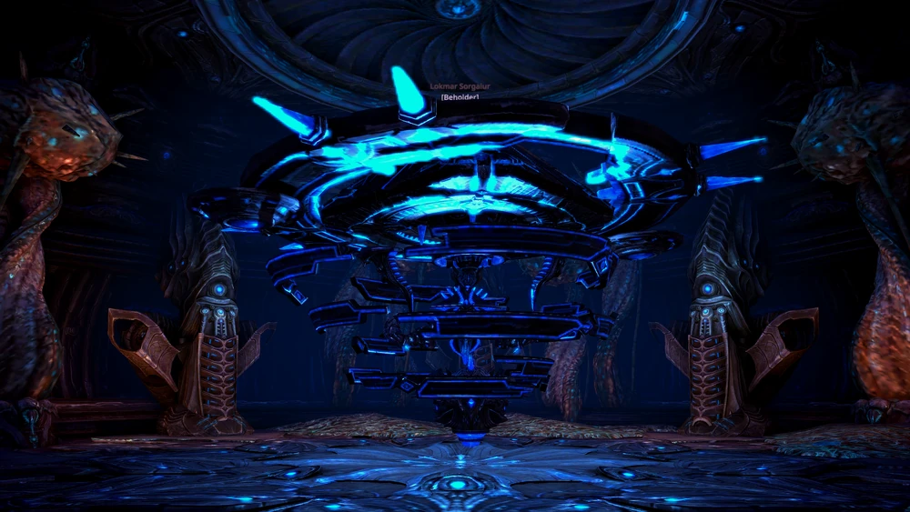
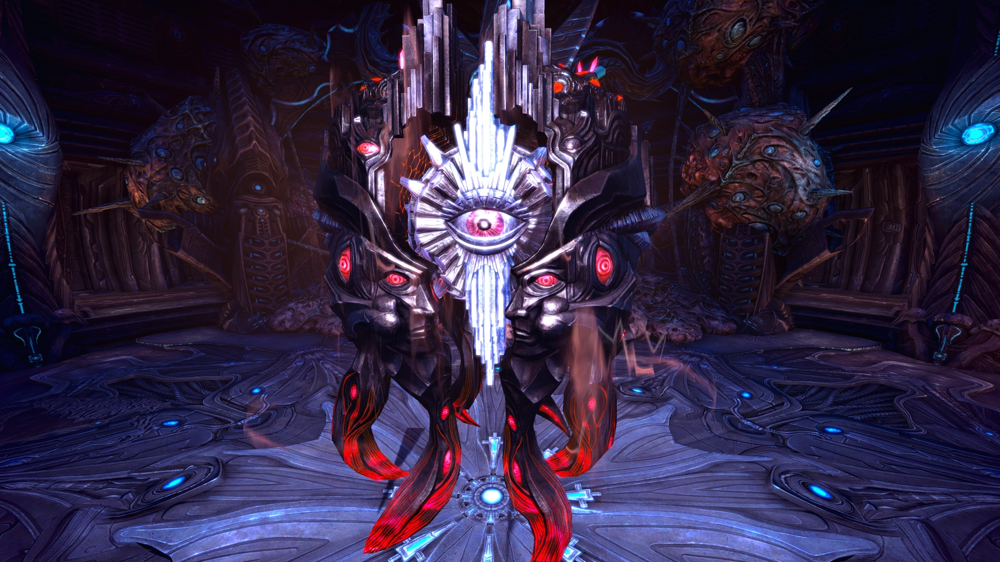
- Enemies:
- Cygnus, Fist of Manaya
- Halveterak Overseer, Cyanoguard
- Lokmar Sorgalur, Beholder
- Meldita, Eye of Manaya
- Rewards:
 Visionmaker Chest Design
Visionmaker Chest Design Visionmaker Gloves Design
Visionmaker Gloves Design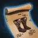
Visionmaker Boots Design- Greater Abyssal Mark (for Abyss Weapon and Chest)
- Master Enigmatic Scroll
- Marvelous Feedstock
- Tier 9 Feedstock
Manaya's Core (Normal) [MC]
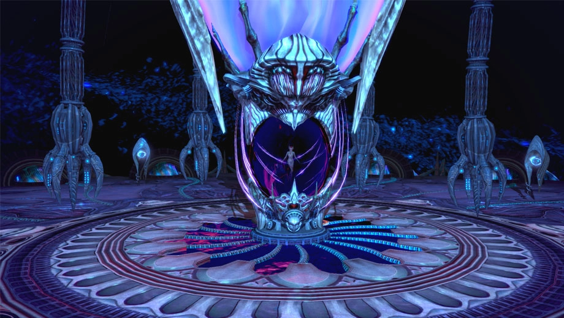
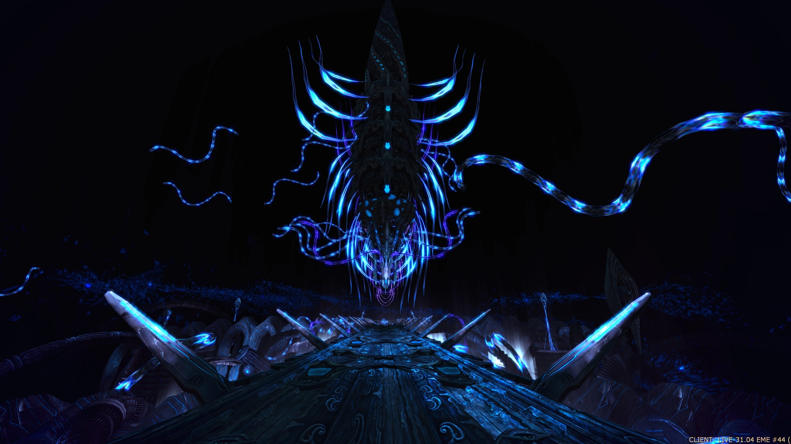
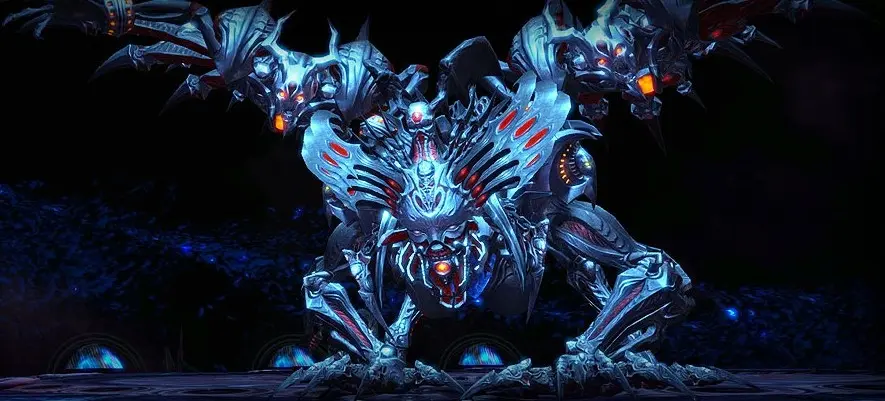
- Enemies:
- Hrathgol
- Melkatran
- Shandra Manaya
- Rewards:
 Visionmaker Weapon Design
Visionmaker Weapon Design- Master Enigmatic Scroll
- Marvelous Feedstock
- Tier 9 Feedstock
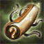
Intricate Identification Scrolls to enchant to +12.Part 4 — Hard Mode Dungeons (Tier 1)
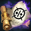
Onslaught Scrolls and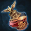
Nostrums of Energy) and learn dungeon mechanics.Balder's Temple (Hard Mode) [BTH]
- Enemies:
- Nightmare Kakun, Watcher of the Garden
- Nightmare Lagreah, Protector of the Garden and/or Nightmare Grig, Keeper of Flame
- Nightmare Glaciernus, the Frostbinder
- Nightmare Auricadis, Guardian of the Relic
- Rewards:
- Abyss Gloves
- 2x Lesser Abyssal Mark (for Abyss Gloves and Boots)
- Sprocket Ring
- Chain of Deceit
- Dream Bindings
- Marvelous Alkahest
Fane of Kaprima (Hard Mode) [FoKH]
- Enemies:
- Nightmare Pyrvathas, Infernal Gatekeeper
- Nightmare Agarta, Syndicate Battlemaster
- Nightmare Kornus, Champion of Kaprima
- Nightmare Kaprima, Demon Reaver
- Rewards:
- Abyss Boots
- 2x Lesser Abyssal Mark (for Abyss Gloves and Boots)
- Dangling Fork
- Chain of Deceit
 Fanesteel
Fanesteel- Marvelous Alkahest
Part 5 — Hard Mode Dungeons (Tier 2)
Argon Corpus (Hard Mode) [ACH]
- Enemies:
- Nightmare Cygnus, Fist of Manaya
- Nightmare Halveterak Overseer, Cyanoguard
- Nightmare Lokmar Sorgalur, Beholder
- Nightmare Meldita, Eye of Manaya
- Rewards:
- Abyss Weapon
- Abyss Chest
- 2x Greater Abyssal Mark (for Abyss Weapon and Chest)
- Master Enigmatic Scroll
- Marvelous Alkahest
Kelsaik's Nest (Hard Mode) [KNH]
- Enemy: Nightmare Kelsaik
- Rewards:
- Master Enigmatic Scroll
- Marvelous Alkahest
 Pristine Phoenix Beak
Pristine Phoenix Beak- Marvelous Feedstock
- Mayhem Chest
- Mark of the Phoenix (for Mayhem Chest or Pristine Phoenix Beak)
Part 6 — The Final Challenge
Manaya's Core (Hard Mode) [MCH]
- Enemies:
- Nightmare Hrathgol
- Nightmare Melkatran
- Nightmare Shandra Manaya
- Rewards:
- Regent Weapon
- Regent Chest
- Regent Gloves
- Regent Boots
- Phoenix Ear
- Crown Jewels
- Phoenix Signet
Part 7 — BiS Gear (Visionmaker)
The Visionmaker Set represents OSTO's Best-in-Slot (BiS) equipment for this progression tier. Unlike most endgame gear, Visionmaker gear is not obtained simply from dungeon drops and must instead be crafted.
Crafting Visionmaker requires collecting a wide variety of materials from across the game, including high-level PvE dungeons, reputation dailies, PvP rewards, and rare gathering resources. As a result, completing a full Visionmaker set typically requires participation in several different endgame activities. Players must also reach Artisan-level crafting in the appropriate profession before they can craft Visionmaker weapons/armor.
Crafting Requirements
(For information on how to acquire each material, hover over/click the material name.)
| Materials | Weapon 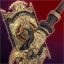 |
Chest |
Gloves 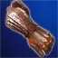 |
Boots |
Total |
|---|---|---|---|---|---|
|
Crafting Rank
Artisan Crafting Skill
Crafting skill level/rank. See Crafting Menu (Default="J" Key)
Source
Crafting: See crafting vendors in main cities and achieve Artisan-level proficiency in Weaponcrafting or Armorcrafting.
OSTO Difference
No Alts/Resets Required: Unlike retail, OSTO allows you to Artisan all professions, not just one.
|
Weaponcrafting (Artisan) |
Armorcrafting (Artisan) |
Armorcrafting (Artisan) |
Armorcrafting (Artisan) |
Artisan |
|
Visionmaker Design
Use this design to learn the corresponding Visionmaker crafting skill.
Weapon:
PVE: Manaya’s Core (Normal) – Rare drop
Alliance: Clarag/Durim/Kaigor, Noctenium Society Reputation Merchant (Alliance Territory, Forts): 25,000 Noctenium Society credits each
Chest / Gloves / Boots:
PVE: Argon Corpus (Hard) – Rare drop
Alliance: Noctenium Society (Alliance) Vendor: 15,000 Noctenium Society credits each
|
1 | 1 | 1 | 1 | 4 |
|
Fanesteel
[Dropped Material] Metal of demonic origin used to craft Visionmaker weapons.
Source
PVE: Fane of Kaprima (Hard)
Purchased From
PVP: Juleor – Killing Spree Quartermaster (Velika)
|
500 | - | - | - | 500 |
|
Dream Bindings
Dream Bindings
[Dropped Material] Strong strips of material used to craft Visionmaker armor.
Source
PVE: Balder’s Temple (Hard)
Purchased From
PVP: Surah – Bellicarium Quartermaster (Velika)
|
- | 400 | 200 | 200 | 800 |
|
Pristine Phoenix Beak
Though this beak was violently torn from the head of Kelsaik, fire still crackles around it.
Dropped By
PVE: Nightmare Kelsaik – Kelsaik’s Nest (Hard)
|
9 | 6 | 3 | 3 | 21 |
|
Shandra’s Quill
Feather-like fragment dropped by Shandra Manaya. Used to craft Visionmaker equipment.
Dropped By
PVE: Nightmare Shandra Manaya – Manaya’s Core (Hard)
|
3 | 2 | 1 | 1 | 7 |
|
Kaelic Spark
Kaelic Spark
Rare gathering resource from Val Kaeli used to craft Visionmaker equipment.
Gathered From
PVE: Gathering Nodes – Rare drop
|
3 | 2 | 1 | 1 | 7 |
|
Cyasmic Oil
Oily bladder from argon monsters used in Visionmaker crafting.
Purchased From
PVE: Provelle – Invalesco Merchant (Pathfinder Post)
|
2 | 1 | 1 | 1 | 5 |
|
Argon Vitriol
Durable material dropped from argon enemies.
Dropped By
PVE: Level 60 BAMs (Argonea, Granarkus)
|
3 | 2 | 1 | 1 | 7 |
|
Chaos Block
Fragment infused with chaotic nexus energy.
Purchased From
Nexus: Eriale – Agnitor Merchant (Zulfikar Fortress)
|
2 | 1 | 1 | 1 | 5 |
|
Victor’s Trophy
Used to craft Visionmaker and Nightforge equipment.
Purchased From
PVP: Surah – Bellicarium Quartermaster (Velika)
PVP: Juleor – Killing Spree Quartermaster (Velika)
|
3 | 2 | 1 | 1 | 7 |